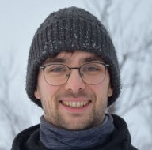
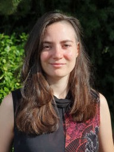

AI Website SoftwareWe’re looking for highly motivated students with a strong physics background and experience in optics (cryogenics and programming are a plus). 3-year PhD or 4-year integrated MSc+PhD available.
📅 Apply by March 31, 2026
The Axion Dark Matter research group focuses on searches for dark matter in the form of axions and axion-like particles (ALPs) both in astrophysical observations and dedicated laboratory experiments. It is supported by a Starting Grant from the European Research Council. The group is hosted at the Center for Cosmology and Particle Physics Phenomenology (CP3 Origins) University of Southern Denmark (SDU) in Odense and at the Institute for Experimental Physics at Hamburg University.
The nature of dark matter, which makes up more than 80% of the total matter in the Universe, is one of the most pressing questions in fundamental particle physics, astrophysics, and cosmology. Axions and ALPs are promising dark matter candidates which could produce specific observational signatures in astrophysical observations and in laboratory searches.
Please feel free to contact us for potential thesis projects! To get an idea, check out theses done by members of our group here.
(01/2026) Elmeri's paper on binary classification of background and signal events in our transition edge sensor is published in scientific reports.
(01/2026) We constrain the intergalactic magnetic field with Fermi-LAT observations of the brightest ever GRB221009A. Check out the paper here.
(12/2025) The first science results of the ALPS II detector are finally on the arXiv together with an in-detail description of the optics and analysis. What an achievement and congratulations to everyone involved.
(12/2025) We are extremely happy that our research proposal on achieving ultra-low backgrounds for cryogenic single photon detection has received funding from DFF. Keep your eyes open for a PhD position to be opened soon!
(10/2025) Sara's paper on modeling the EBL is now available on the arXiv and the code can be found on gitHub together with extensive usage examples. Check it out!
(10/2025) We are extremely grateful that the Thrige Foundation based in Odense will support us with a research grant to improve our cryogenic lab equipment.
Check out our news archive for older posts.

Eike Ravensburg
Axion theory, Fermi LAT
SDU
Atreya Archaryya
CTAO, H.E.S.S. Fermi LAT
SDU
Elmeri Rivasto
ALPS II
SDU

Sara Porras Bedmar
Phenomenology, H.E.S.S.
UHH
Dominik Pastuszka Malek
H.E.S.S.
SDU
Our paper (published in Scientific reports) explores whether deep neural networks can learn to tell the difference between real single-photon signals and random background noise in the time-trace output of our cryogenic transition edge sensor. What we found was surprising: despite careful optimization, the neural network couldn’t outdo traditional analysis methods at spotting real photon events, largely because background noise hides photon-like features that confuse the classifier. Our work highlights both the promise and the limits of applying AI to particle detection and points toward smarter algorithms that might one day help reveal new physics hiding in the noise. 
When an enormous explosion in the distant universe hurled gamma rays toward us in the record-breaking burst GRB 221009A, astronomers saw an opportunity to probe one of cosmic magnetism’s biggest mysteries: the strength of the magnetic field threading the seemingly empty space between galaxies. As gamma rays travel across the universe, they can spawn pairs of electrons and positrons that are bent by intergalactic magnetic fields, creating a delayed cascade of lower-energy gamma rays. By analyzing data from NASA’s Fermi Large Area Telescope and finding no significant delayed cascade, we set strong limits yet on how weak those intergalactic magnetic fields can be. The paper is published in PRD.
Detecting dark matter axions requires incredibly sensitive instruments. Our study now published in PRD shows how an open Fabry-Pérot resonator — essentially a precision “light echo chamber” operating at gigahertz frequencies and chilled to near-absolute zero — could boost our ability to spot the tiny electro-magnetic whispers axions might produce in a magnetic field. With clever engineering, this approach could probe axion interactions far beyond what traditional designs can reach, opening a promising new window on the dark side of the cosmos. 
Using the latest data compilation of measurements of the cosmological photon background from optical wavelengths to X-ray energies, we searched for a decay line signal from axion dark matter. We could derive new constraints that improve on previous results by roughly one order of magnitude. Also, we find that axion parameters that could explain an excess observed with the LORRI instrument on the New Horizons probe are in tension with other experiments. The paper is submitted to PRD and available on arXiv.
Even the tiniest background light from ordinary black-body radiation can mimic the signal we are looking for with our transition edge sensor. This paper from the ALPS II TES team and published in PRD dives into the heart of that problem by combining detailed simulations with real measurements of how thermal radiation sneaks into our TES. We show that the unwanted background seen in their setup matches what you’d expect from black-body radiation and that improving the energy resolution of the sensor can cut this noise by an order of magnitude.
We re-analyzed gamma-ray data from certain distant galaxies taken with the H.E.S.S. and Fermi telescopes to search for extended gamma-ray emission around these sources. Usually, we believe that these sources could be pointlike, but gamma-ray induced particle cascades could lead to a halo around them. The size of the halo depends on the strength of intergalactic magnetic fields. We didn't see any sign of extended emission, which leads to new strong constraints on the magnetic field strength. Our findings our published in the Astrophysical Journal Letters and also available here.
For the first time, we have applied machine learning to data of our transition edge sensor in order to improve the rejection of unwanted background counts. As it turns out, approaches using neural networks outperform our previous analysis methods and suggest that we can efficiently suppress our dark current levels. Check out the full paper published in Annals of Physics or on the arXiv.
We used Fermi-LAT observations of bright gamma-ray outbursts of flat spectrum radio quasars (FSRQs) to search for oscillations between photons and axion-like particles. For the first time, we self-consistently include photon-photon dispersion off the radiation fields in these environments and let the magnetic field free to vary in our fitting. For the first time we are able to constrain the ALP photon coupling for ALP masses up to 200 neV with gamma-ray observations. The paper is published in PRD and available here.
In the presence of dense photon fields in the vicinity of gamma-ray production sites in the jets of active galactic nuclei, the conversion of photons into axion-like particles competes with photon-photon interactions such as dispersion and photon absorption. In our recent study, which is accepted in PRD (and available on the arxiv) we show that both effects are important to include when searching for ALP signatures in the spectra of these sources.
We estimate the sensitivity of the low energy technique of the LAT to detect a gamma-ray burst caused by the conversion of axion-like particles produced in extragalactic core collapse supernovae. We find that we could detect such a burst from supernovae in galaxies up to 10 Mpc (~30 million light years) away. The study is accepted for publication in PRD and available as a preprint on arxiv.
We have identified 15 core collapse supernovae observed with the Zwicky Transient facility (ZTF) that are potentially well suited to search for a gamma-ray burst signal produced from axion-like particles. With the continued operation of ZTF and the upcoming Rubin Observatory, this sample will grow significantly in the near future. Check out the proceedings article for the ICRC2021 on arxiv and our original study published in 2020 in PRL.
An open-source python package that calculates the conversion probability between gamma rays and axions/ALPs in various astrophysical magnetic-field environments. Check out the documentation here and the proceedings article for the ICRC 2021.
Using realistic simulations of future observations with CTA of active galactic nuclei, we present the sensitivity of CTA to detect signatures of axions and ALPs, to constrain the extragalactic background light, detect intergalactic magnetic fields, and search for Lorentz Invariance Violation. The paper is accepted in JCAP and you can find the preprint here.
Together with Jamie Davies from Oxford, we have put out a paper about the oscillations of photons into axion-like particles in the magnetic fields of jets of active galaxies. It turns out that the exact morphology of the magnetic field in the jet can be quite important - we need multiwavelength data to constrain it. Check out the paper published in PRD here.
AI Website Software